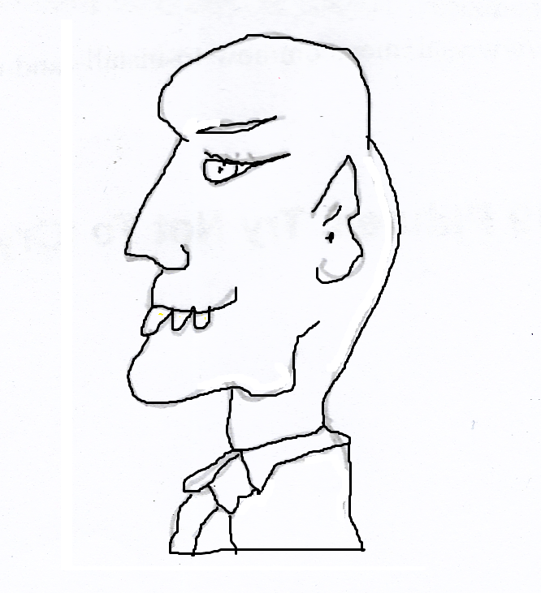

Pól
Nuair a bhí mé i mo ghasúr scoile, ba bheag lá nach dtugainn cuairt ar Theach an Mhargaidh. Bhí sé mar a bheadh sé do mo mhealladh chuige.
Bhí an teach s'againne ar an taobh eile den droichead, rud a d'fhág nach dtiocfadh liom pilleadh ar an bhaile gan dul thar an fhoirgneamh uasal. Ach déarfainn dá mbeinn i mo chónaí in íochtar an bhaile go rachainn as mo chosán le bheith i ngaobhair Theach an Mhargaidh.